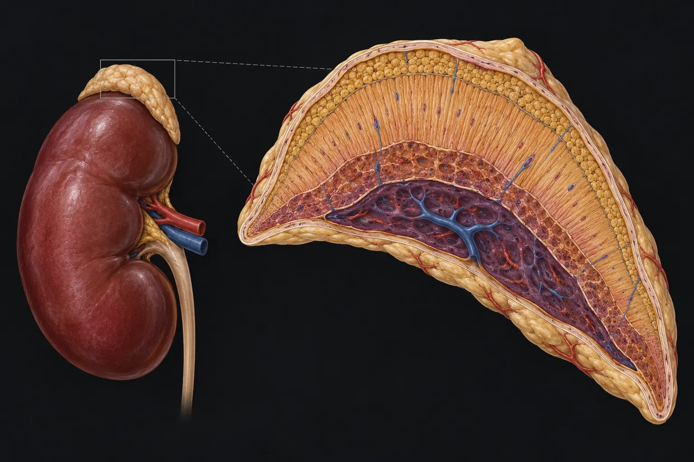

Primary adrenal failure
Cortisol ↓ → feedback ↓ → ACTH ↑. Aldosterone may also fall. High ACTH can cause hyperpigmentation.
One continuous teaching journey. Narration drives the diagrams, pauses for predictions, gives spoken feedback and then rebuilds the entire mechanism.
Audio uses the MeducateMe Chatterbox voice when available, with a device voice as an automatic fallback.
Two small glands above the kidneys contain several endocrine systems. Build the anatomy first. Disease will become much easier once every hormone has a physical home.

The cortical zones look different because they express different steroidogenic enzymes. The medulla is a different tissue altogether.
StAR moves cholesterol into the mitochondrion. CYP11A1 removes its side chain to make pregnenolone. From that common junction, enzyme availability determines the destination.
StAR = mitochondrial transport · CYP11A1 = side-chain cleavage
Aldosterone
Cortisol
DHEA / androstenedione
You do not need every enzyme at once. The clinically useful checkpoints are 17-alpha-hydroxylase, 21-hydroxylase and 11-beta-hydroxylase.
The hypothalamus releases CRH. The anterior pituitary releases ACTH. ACTH drives cortisol synthesis in the zona fasciculata. Cortisol then feeds back to both brain levels.
Cortisol ─| CRH and ACTH
ACTH → MC2R → cAMP / PKA → StAR + steroidogenic enzymes.
Think of three immediate jobs: make fuel available, preserve vascular responsiveness, and restrain excessive inflammation.
Run normal physiology backwards. During fasting, infection or trauma, glucose support falls and vascular responsiveness falls.
The HPA axis predicts the blood tests. Ask whether the adrenal itself has failed or whether ACTH drive has failed upstream.
Cortisol ↓ → feedback ↓ → ACTH ↑. Aldosterone may also fall. High ACTH can cause hyperpigmentation.
ACTH is low or inappropriately normal → cortisol ↓. Aldosterone is usually preserved because RAAS is its main regulator.
Do not memorise CAH as a table. Block one enzyme and let the pathway tell you what must happen next.
Cortisol falls. In severe disease aldosterone also falls. 17-hydroxyprogesterone accumulates, while steroid flux is shunted toward androgen synthesis.
Poor feeding, weight loss, vomiting and lethargy. Sodium 121, potassium 7.0, glucose 2.4 mmol/L.
The phenotype changes because the accumulated precursors and open escape pathways change.
Cortisol ↓ · ± aldosterone ↓ · androgens ↑
Salt wasting + androgen excessCortisol ↓ · DOC ↑ · androgens ↑
Hypertension + androgen excessCortisol ↓ · sex steroids ↓ · mineralocorticoid precursors ↑
Hypertension + reduced sex-steroid effectsIf you can rebuild the system from normal anatomy to disease, you no longer need to remember CAH as disconnected facts.